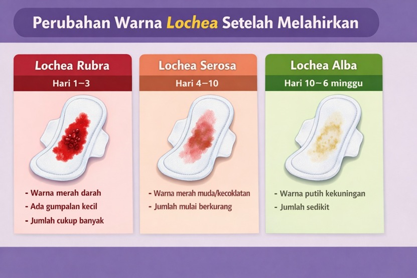

Lochea adalah darah atau cairan yang keluar dari jalan lahir setelah ibu melahirkan. Cairan ini berasal dari sisa darah, jaringan, dan lendir dari dalam rahim yang sedang dalam proses penyembuhan.

Berwarna merah segar, berisi darah dan sisa jaringan, jumlah cukup banyak.
Berwarna merah muda atau kecokelatan dengan jumlah yang mulai berkurang.
Berwarna putih kekuningan hingga jernih dengan jumlah cairan yang tinggal sedikit.
Segera periksa ke bidan atau dokter jika: